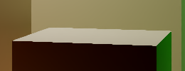

AA in path tracers is basically free since multiple samples across frames are already being taken, the only thing that needs to be done is slightly offsetting the ray direction and origin each time so that the ray's starting position covers the entire pixel across multiple samples. So when choosing pixel position on a screen, I just add small random offset for AA.
pixelCenter += UniformFloat2(-0.5f, 0.5f);

No Anti Aliasing
Anti Aliasing